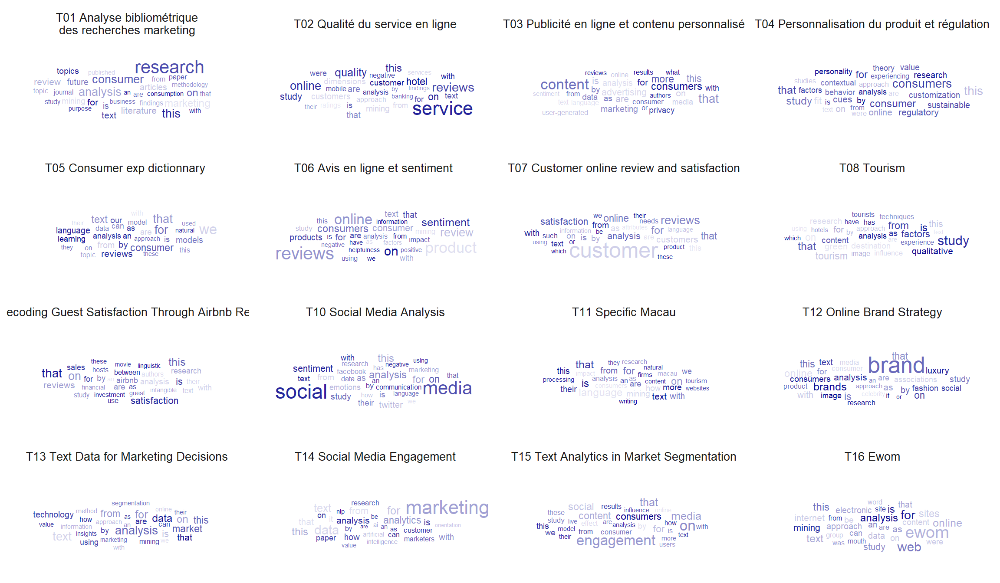

import community as community_louvainimport pandas as pdimport numpy as npimport networkx as nximport matplotlib.pyplot as pltimport plotly.express as pximport refrom ipysigma import Sigma, SigmaGridfrom itertools import combinationsfrom datetime import datetimefrom functools import partiallist_articles = r.list_articles
2 Description
Code
df<- df%>%filter(review2 !="out")t0 <-as.data.frame(table(df$review2))%>%filter(Freq>3)g01 <-ggplot(t0, aes(x=reorder(Var1, Freq), y=Freq)) +geom_bar(stat="identity", fill="steelblue") +coord_flip() +theme_minimal() +labs(title="Number of Articles per Journal", y="Proportion", x="") +theme(axis.title.y =element_blank(),axis.text.y =element_text(size =10) )t1<-as.data.frame(table(df$year))# Graph 2: Number of publications per yearg02 <-ggplot(t1, aes(x=Var1, y=Freq, group=1)) +geom_line(size=1.1, color="steelblue") +geom_point(size=2, color="steelblue") +geom_smooth(color="#7D7C7C", linewidth=0.5)+theme_minimal() +labs(title="Number of Publications per Year", y="", x="Year") +theme(axis.text.x =element_text(angle =45, hjust =1, size =10),axis.title.x =element_blank(),plot.title =element_text(hjust =0.5) )plot_grid(g01, g02, labels =c('A', 'B'), label_size =8, ncol=2, rel_widths =c(1,1))
Code
ggsave(filename="./images/quant.jpeg", plot=last_plot(), width =27, height =18, units ="cm")
3 Keywords
Code
user2<- df %>%select(id, keywords)%>%mutate(keywords=tolower(keywords))%>%separate(keywords, sep="\\|", into=c("A1","A2","A3","A4","A5","A6","A7","A8","A9","A10", "A11", "A12", "A13", "A14", "A15", "A16"))%>%pivot_longer(-id, names_to="Rang", values_to ="keywords") %>%filter(!is.na(keywords))test_user2 <- df %>%select(id, keywords) %>%mutate(keywords =tolower(keywords)) %>%cSplit('keywords', sep ="|", direction ="wide") %>%pivot_longer(-id, names_to ="Rang", values_to ="keywords", values_drop_na =TRUE)user2$keywords=str_trim(user2$keywords,side ="both")user2$keywords[user2$keywords=="artificial intelligence (ai)"]<-"ai"user2$keywords[user2$keywords=="automated analysis of text"]<-"automated text analysis"user2$keywords[user2$keywords=="automated textual analysis"]<-"automated text analysis"user2$keywords[user2$keywords=="natural language processinf"]<-"nlp"user2$keywords[user2$keywords=="natural language processing (nlp)"]<-"nlp"user2$keywords[user2$keywords=="natural language processing (nlp)-based approach"]<-"nlp"user2$keywords[user2$keywords=="nlp tools"]<-"nlp"user2$keywords[user2$keywords=="natural language processing"]<-"nlp"user2$keywords[user2$keywords=="online review"]<-"online reviews"user2$keywords[user2$keywords=="online shopping review"]<-"online reviews"user2$keywords[user2$keywords=="review"]<-"online reviews"user2$keywords[user2$keywords=="reviews"]<-"online reviews"user2$keywords[user2$keywords=="topic modelling"]<-"topic modeling"user2$keywords[user2$keywords=="user generated content"]<-"user-generated content"# compter les mots clesfoo<- user2 %>%mutate(n=1) %>%group_by(id,keywords)%>%summarise(n=sum(n))foo1<- foo %>%group_by(keywords)%>%summarise(m=n())%>%filter(m>1)set.seed(42)ggplot(foo1, aes(label = keywords, size = m)) +geom_text_wordcloud() +scale_size_area(max_size =10) +theme_minimal()
ggsave(filename="./images/keywords.jpeg", plot=last_plot(), width =27, height =18, units ="cm")
3.1 With a breakdown of the keywords
The strategy is to reduce the morphologies of the most frequent keywords, in the form of unigrams, and then re-decompose the terms that make up the non-recoded keywords.
corpus <- quanteda::corpus( df,text_field ="Texte",docid_field ="id",unique_docnames =FALSE )corpus_dfm <- quanteda::dfm(corpus) %>% quanteda::dfm_trim(# tokens_remove = 'nan',# Get rid of any word that doesn't occur at least xmin_termfreq =5,# Get rid of any word that is in at least x per cent of documentsmax_docfreq =0.9,# Below we specify percentages - we can specify counts or ranksdocfreq_type ="prop" ) %>% quanteda::dfm_keep(# '[a-zA-Z]', # filter out terms without alpha# valuetype='regex',min_nchar =2) # Only words with at least 3 charactersout <- quanteda::convert(corpus_dfm, to ='stm')K =16# number of topicsFORMULA_RANGE <-paste("1",as.character(K), sep=":")PREVALENCE_FORMULA <-as.formula(paste("~", "year"))PREVALENCE_FORMULA_EFFECT <-as.formula( paste(FORMULA_RANGE, paste("~ ", "year", collapse="+") ) )OUTPUT_PATH <-"./"OUTPUT_FILE <-sprintf("STM_model_%s.RData", K)message(PREVALENCE_FORMULA)message(PREVALENCE_FORMULA_EFFECT)message(OUTPUT_FILE)
the score: \(\beta_{v, k} (\log \beta_{w,k} - 1 / K \sum_{k'} \log \beta_{v,k'})\)
Code
beta<-t(stm_model$beta$logbeta[[1]]) %>%as.data.frame()logbeta<-stm_model$beta$logbeta[[1]]vocab<-stm_model$vocab %>%as.data.frame()vocab<- vocab %>% dplyr::rename(feature=1)#frequencebeta2<-cbind(vocab, beta) %>%pivot_longer(-feature, names_to="topic", values_to ="logprob") %>% dplyr::group_by(topic)%>% dplyr::mutate(r=rank(desc(logprob)),p=exp(logprob)) %>% dplyr::filter(r<31)#labelisation des topicsbeta3<-calcfrex(logbeta, w =0.25, wordcounts =NULL) beta4<-cbind(vocab, beta3) %>%as.data.frame() %>%pivot_longer(-feature, names_to="topic2", values_to ="frex") %>%mutate(topic=paste0("V",topic2))beta2<- beta2 %>%left_join(beta4, by=c("feature", "topic"))synth<-labelTopics(stm_model, topics =NULL, n =5, frexweight =0.25)prob<-synth$probfrex<-synth$frex#intitulés suggérés par Bardbeta2$topic[beta2$topic=="V1"]<-"T01 Analyse bibliométrique\ndes recherches marketing"beta2$topic[beta2$topic=="V2"]<-"T02 Qualité du service en ligne"beta2$topic[beta2$topic=="V3"]<-"T03 Publicité en ligne et contenu personnalisé"beta2$topic[beta2$topic=="V4"]<-"T04 Personnalisation du produit et régulation"beta2$topic[beta2$topic=="V5"]<-"T05 Consumer exp dictionnary "#il a du malbeta2$topic[beta2$topic=="V6"]<-"T06 Avis en ligne et sentiment "beta2$topic[beta2$topic=="V7"]<-"T07 Customer online review and satisfaction"beta2$topic[beta2$topic=="V8"]<-"T08 Tourism"beta2$topic[beta2$topic=="V9"]<-"T09 Decoding Guest Satisfaction Through Airbnb Reviews"beta2$topic[beta2$topic=="V10"]<-"T10 Social Media Analysis"beta2$topic[beta2$topic=="V11"]<-"T11 Specific Macau"beta2$topic[beta2$topic=="V12"]<-"T12 Online Brand Strategy"beta2$topic[beta2$topic=="V13"]<-"T13 Text Data for Marketing Decisions"beta2$topic[beta2$topic=="V14"]<-"T14 Social Media Engagement"beta2$topic[beta2$topic=="V15"]<-"T15 Text Analytics in Market Segmentation"beta2$topic[beta2$topic=="V16"]<-"T16 Ewom"#la transparence rend compte de l'exclusitivité frexggplot(beta2)+geom_text_wordcloud(aes(label=feature, size=p, alpha=2100-frex), color="darkblue")+facet_wrap(vars(topic), ncol=4)+scale_size_area(max_size =7)+theme(strip.text =element_text(size =10))

Code
ggsave(paste0("./images/stm_topic",K,".jpg"), plot=last_plot(),width =28, height =20, units ="cm")
4.4 Prevalence description (beta)
Code
foo<-stm_effects$parameterslibrary(tidyr)library(plyr)#pour separer les liste et les transformer en df #attention ça pertube foo1<-ldply(foo, data.frame)%>%select(contains('est')) library(dplyr)F<-data.frame(param=c("cte", "2015", "2019","2020","2021","2022","2023")) # autant de fois que Kparam<-rbind(F, F, F, F, F, F, F, F, F, F, F, F, F, F, F ,F)R<-data.frame(topic=c("T01 bibliometrics consumer","T02 Service quality review","T03 Ads and privacy","T04 Customization","T05 Consumer exp dictionnary ","T06 Product review sentiment ","T07 customer online review","T08 Tourism","T09 Airbnb","T10 Social media","T11 specific","T12 Branding","T13 marketing analytics","T14 engagement media sociaux","T15 marketing strategy","T16 e wom"))#autant de fois que de paramètresR<-rbind(R, R, R, R, R, R, R ) %>%arrange(topic)foo2<-cbind(foo1, R, param)%>%pivot_longer(-c("topic","param"), names_to ="sim", values_to ="est") %>% dplyr::group_by(topic,param)%>% dplyr::summarise(mean=mean(est, na.rm=TRUE),se =sd(est)/sqrt(24),t=abs(mean)/se) %>% dplyr::mutate(param=ifelse(param=="cte", "2010", param))foo3<-cbind(foo1, R, param)%>%pivot_longer(-c("topic","param"), names_to ="sim", values_to ="est") %>% dplyr::group_by(topic,param)%>% dplyr::summarise(mean=mean(est, na.rm=TRUE),se =sd(est)/sqrt(24),t=abs(mean)/se) %>% dplyr::filter(param=="cte")%>% dplyr::select(-2,-4,-5) %>% dplyr::rename(cte = mean)foo4<-foo2 %>%left_join(foo3) %>%mutate(mean2=ifelse(param!="2010",mean+cte,mean))# dplyr::mutate(time=ifelse(str_sub(param, 1,1)=="0" |str_sub(param, 1,1)=="1" , "no", "yes"))ggplot(foo4, aes(x=param,y=mean2,group=topic))+geom_bar(stat="identity")+# geom_smooth(se = FALSE )+facet_wrap(vars(topic), scale="fixed",ncol =4)+theme(axis.text.y =element_text(size=5))+theme(axis.text.x =element_text(size=5))+labs(x=NULL, y="prévalence")
Code
ggsave(paste0("./images/stm_effect",K,".jpg"), plot=last_plot(),width =28, height =20, units ="cm")library(RColorBrewer)
#entropiefoo5<-foo4%>%select(1,2,7)%>%mutate(e=mean2*log(mean2)) %>%group_by(param) %>% dplyr::summarise(entropie=-sum(e))foo5$param<-as.numeric(foo5$param)ggplot(foo5,aes(x=param, y=entropie, group =1))+geom_point(stat ="identity")+geom_smooth(se=FALSE)+ylim(1.5,3)
5 Networks of authors
5.1 Check name of authors
We need to check if there are more than one unique authorname per authid. If so, we need to change the different names of author to the same name in order to have the exact same node per author later in the network.
number_duplicates <-nrow(result)cat("There are ", number_duplicates, " authors registered with different names.")
There are 21 authors registered with different names.
5.2 Correct the duplicate names
Let’s correct that by using one property of the distinct function: the .keep_all = TRUE parameter. It keeps the first occurrence of each group, which is the first row encountered for each unique combination of authid and authname. It will be faster than manually changing the name of each author.
Code
# Merge list_articles with result on the authid columnmerged_df <-left_join(list_articles, result, by ="authid")# Replace authname values in list_articles with those from resultlist_articles$authname <-ifelse(!is.na(merged_df$authname.y), merged_df$authname.y, list_articles$authname)cat("There are", n_distinct(list_articles$id), "articles and", n_distinct(list_articles$authname), "authors overall in the data.")
There are 369 articles and 901 authors overall in the data.
Code
# Write the updated dataframe to a CSV file write_csv2(list_articles, "nlp_full_data_final_unique_author_names.csv")
It is now done. We can check again if there are more than one unique authorname per authid.
5.3 Verification of duplicate names
Code
test <- list_articles %>%group_by(authid) %>%select(authid, authname, id) %>% dplyr::mutate(n =n())result <- test %>%group_by(authid) %>%filter(n_distinct(authname) >1) %>%distinct(authid, .keep_all =TRUE) %>%relocate(id)result %>%reactable()
5.4 Construct the networks
Code
# Constants to include in the network as hovering text for nodesCOLUMNS_TO_COLLECT = ['affilname', 'affiliation_country', 'title', 'review', 'year', 'citedby_count', 'subjects_area', 'keywords']def get_author_info(filtered_articles, columns):""" Given a DataFrame of filtered articles and a list of column names, this function collects author information and returns it as a dictionary. """ author_info = {col: {} for col in columns} author_info["citations"] = {}for _, row in filtered_articles.iterrows(): author_name = row['authname']if pd.notna(row['citedby_count']): author_info["citations"][author_name] = author_info["citations"].get(author_name, 0) + row['citedby_count']for col in columns: value = row[col]if pd.notna(value): value =str(value).strip()if author_name in author_info[col]:if value notin author_info[col][author_name]: author_info[col][author_name] +=" | "+ valueelse: author_info[col][author_name] = valuereturn author_infodef sigma_graph(dataframe, start_year, end_year):""" Creates a graph representing author collaborations based on a given DataFrame of articles. Filters the articles based on the given start and end years. """# Error handlingif dataframe.empty:print("The DataFrame is empty.")returnNone, Nonefor column in COLUMNS_TO_COLLECT:if column notin dataframe.columns:print(f"The DataFrame is missing the column: {column}")returnNone, None list_articles = dataframe filtered_articles = list_articles[(list_articles['year'] >= start_year) & (list_articles['year'] <= end_year)] author_pairs = [] grouped = filtered_articles.groupby('id')[['authid', 'authname']].agg(list).reset_index()for _, row in grouped.iterrows():id= row['id'] authors = row['authid'] authnames = row['authname']iflen(authors) ==1: author_pairs.append((id, authors[0], authors[0], authnames[0], authnames[0]))eliflen(authors) >1: author_combinations =list(combinations(range(len(authors)), 2))for i, j in author_combinations: author_pairs.append((id, authors[i], authors[j], authnames[i], authnames[j])) result_df = pd.DataFrame(author_pairs, columns=['id', 'authid1', 'authid2', 'authname1', 'authname2']) collaboration_df = result_df[["authname1", "authname2"]] collaboration_df = pd.DataFrame(np.sort(collaboration_df.values, axis=1), columns=collaboration_df.columns) collaboration_df['value'] =1 collaboration_df = collaboration_df.groupby(["authname1", "authname2"], sort=False, as_index=False).sum() G = nx.from_pandas_edgelist(collaboration_df, 'authname1', 'authname2', edge_attr='value', create_using=nx.Graph())for u, v in G.edges: G[u][v]["color"] ="#7D7C7C"for index, row in collaboration_df.iterrows(): G.add_edge(row['authname1'], row['authname2'], weight=row['value']) metrics = {'centrality': nx.degree_centrality,'betweenness': nx.betweenness_centrality,'closeness': nx.closeness_centrality,'eigenvector_centrality': partial(nx.eigenvector_centrality, max_iter=1000),'burt_constraint_weighted': partial(nx.constraint, weight="value"),'burt_constraint_unweighted': nx.constraint }for attr, func in metrics.items(): nx.set_node_attributes(G, func(G), attr) author_info = get_author_info(filtered_articles, COLUMNS_TO_COLLECT)for col in COLUMNS_TO_COLLECT: nx.set_node_attributes(G, author_info[col], col) nx.set_node_attributes(G, author_info['citations'], 'citations')# Compute the inverse burt constraint to plot the lowest values as the biggest nodes# (= authors that are the less constrained in their network => multiple probable collaborations)for node in G.nodes:# Check if the 'burt_constraint_weighted' metric exists for the nodeif'burt_constraint_weighted'in G.nodes[node]: burt_score = G.nodes[node]['burt_constraint_weighted']# Calculate the inverse, avoiding division by zero G.nodes[node]['inverse_burt_weighted'] =1/ burt_score if burt_score !=0else0else:# Handle the case where the 'burt_constraint_weighted' metric is not available for this node# For example, by setting the value to None or a default value G.nodes[node]['inverse_burt_weighted'] =None# or another default value# Compute Louvain commmunities partition = community_louvain.best_partition(G)for node, comm_number in partition.items(): G.nodes[node]['community'] = comm_number# Color the graph using the greedy coloring algorithm with the 'largest_first' strategy colors = nx.greedy_color(G, strategy='largest_first', interchange=False)# Set the computed colors as an attribute to each node in the graph nx.set_node_attributes(G, colors, 'color')# Now, each node in the graph G has an attribute 'color' that corresponds to the color assigned by the greedy_color function data_for_df = []for node in G.nodes(data=True):# `node` is a tuple (node_name, attributes_dict) node_data = node[1] # Extracting the attributes dictionary node_data['Node'] = node[0] # Adding the node name as an attribute# Adding the attributes dictionary of this node to the list data_for_df.append(node_data)# Creating a DataFrame from the list of dictionaries df_nodes = pd.DataFrame(data_for_df) Sigma.write_html(G, default_edge_type ="curve", # Default edge type clickable_edges =True, # Clickable edges edge_size ="value", # Set edge size fullscreen =True, # Display in fullscreen label_density =3, # Label density (= increase to have more labels appear at normal zoom level) label_font ="Helvetica Neue", # Label font max_categorical_colors =10, # Max categorical colors node_border_color_from ='node', # Node border color from node attribute node_color ="community", # Set node colors node_label_size ="inverse_burt_weighted", # Node label size#node_label_size_range = (12, 36), # Node label size range node_label_size_range = (12, 36), # Node label size range#node_metrics = {"community": {"name": "louvain", "resolution": 1}}, # Specify node metrics node_size ="inverse_burt_weighted", # Node size#node_size_range = (3, 30), # Node size range node_size_range = (2, 20), # Node size range path =f"networks/authors/{start_year}_{end_year}_sigma_burt_SLR.html", # Output file path start_layout =3, # Start layout algorithm#node_border_color = "black", # Node border color#edge_color = "#7D7C7C" # Edge color# node_label_color = "community" # Node label color )return G, df_nodes
5.5 Create the network overall (from 0 to 2023)
Code
print("The year range of the publications is from {} to {}".format(list_articles['year'].min(), list_articles['year'].max()))
The year range of the publications is from 1996.0 to 2023.0
# Select only the numeric columns from the dataframedf_numeric <- df_0_2023[sapply(df_0_2023, is.numeric)]# Calculate the correlation matrix and round the values to one decimal pointcorr <-round(cor(df_numeric, use ="complete.obs"), 1)# Calculate a matrix of p-values for the correlations# Note: 'cor_pmat' is typically a custom function or part of a specific package.# Make sure you have defined or installed any package that includes this function.p.mat <-cor_pmat(df_numeric)# Visualize the lower triangle of the correlation matrix using ggcorrplot# The heatmap color indicates the correlation coefficient between variables# 'hc.order' is set to TRUE to reorder the matrix using hierarchical clustering# 'type' is set to "lower" to show only the lower triangle of the matrix# 'outline.col' is set to "white" to define the border color around the squarescorr.plot <-ggcorrplot( corr, hc.order =TRUE, type ="lower", outline.col ="white",p.mat = p.mat)# Convert the ggcorrplot object to an interactive plotly object# This allows for interactive features such as tooltips on hoverggplotly(corr.plot)
---title: "Systematic Literature Review"date: "today"date-format: longauthor: - name: Olivier Caron email: olivier.caron@dauphine.psl.eu affiliations: name: "Paris Dauphine - PSL" city: Paris state: France - name: Christophe Benavent email: christophe.benavent@dauphine.psl.eu affiliations: name: "Paris Dauphine - PSL" city: Paris state: Francetoc: truenumber-sections: truenumber-depth: 10format: html: theme: light: yeti #dark: darkly code-fold: true code-summary: "Display code" code-tools: true #enables to display/hide all blocks of code code-copy: true #enables to copy code grid: body-width: 1000px margin-width: 100px toc: true toc-location: leftexecute: echo: true warning: false message: falseeditor: visualfig-align: "center"highlight-style: ayucss: styles.cssreference-location: marginbibliography: slrbib.bib---# Introduction```{r}#| label : libraries-data-rknitr::opts_chunk$set(echo =TRUE,message=FALSE, warning=FALSE)library(tidyverse)library(Rtsne)library(ggrepel)library(ggwordcloud)library(quanteda)library(quanteda.textstats)library(quanteda.textmodels)library(word2vec)library(Rtsne)library(splitstackshape)library(ape)library(cowplot)library(reactable)library(reticulate)library(plotly)library(heatmaply)library(ggcorrplot)theme_set(theme_minimal())library(tidyverse)df <-read_delim("nlp_full_data_final_18-08-2023.csv",delim =";", escape_double =FALSE, trim_ws =TRUE) %>%select(1,5,7,8, 14, 15,16,21,23,32,33,39,40,51,52,53) %>%group_by(entry_number) %>%filter(row_number()==1) %>%rename(id=1,title =8, review=9, text=10, keywords =13)df$review2<-ifelse(str_detect(df$review,"Proceedings")==TRUE, "out", df$review)df$review2<-ifelse(str_detect(df$review2, "Conference")==TRUE, "out", df$review2)df$review2<-ifelse(str_detect(df$review2, "Transactions")==TRUE, "out", df$review2)# for the networkslist_articles <-read_csv2("nlp_full_data_final_18-08-2023.csv") %>%select(1,5,7,8, 14, 15,16,21,23,32,33,39,40,51,52,53) %>%rename(id=1,title =8, review=9, text=10, keywords =13)list_articles$review2<-ifelse(str_detect(list_articles$review,"Proceedings")==TRUE, "out", list_articles$review)list_articles$review2<-ifelse(str_detect(list_articles$review2, "Conference")==TRUE, "out", list_articles$review2)list_articles$review2<-ifelse(str_detect(list_articles$review2, "Transactions")==TRUE, "out", list_articles$review2)list_articles <- list_articles %>%filter(review2 !="out")``````{python}#| label : libraries-data-pythonimport community as community_louvainimport pandas as pdimport numpy as npimport networkx as nximport matplotlib.pyplot as pltimport plotly.express as pximport refrom ipysigma import Sigma, SigmaGridfrom itertools import combinationsfrom datetime import datetimefrom functools import partiallist_articles = r.list_articles```# Description```{r}#| label : description#| fig-height: 7#| fig-width: 17df<- df%>%filter(review2 !="out")t0 <-as.data.frame(table(df$review2))%>%filter(Freq>3)g01 <-ggplot(t0, aes(x=reorder(Var1, Freq), y=Freq)) +geom_bar(stat="identity", fill="steelblue") +coord_flip() +theme_minimal() +labs(title="Number of Articles per Journal", y="Proportion", x="") +theme(axis.title.y =element_blank(),axis.text.y =element_text(size =10) )t1<-as.data.frame(table(df$year))# Graph 2: Number of publications per yearg02 <-ggplot(t1, aes(x=Var1, y=Freq, group=1)) +geom_line(size=1.1, color="steelblue") +geom_point(size=2, color="steelblue") +geom_smooth(color="#7D7C7C", linewidth=0.5)+theme_minimal() +labs(title="Number of Publications per Year", y="", x="Year") +theme(axis.text.x =element_text(angle =45, hjust =1, size =10),axis.title.x =element_blank(),plot.title =element_text(hjust =0.5) )plot_grid(g01, g02, labels =c('A', 'B'), label_size =8, ncol=2, rel_widths =c(1,1))ggsave(filename="./images/quant.jpeg", plot=last_plot(), width =27, height =18, units ="cm")```# Keywords```{r}#| label : keywords#| fig-height: 5#| fig-width: 10#| column: page#| fig-align: centeruser2<- df %>%select(id, keywords)%>%mutate(keywords=tolower(keywords))%>%separate(keywords, sep="\\|", into=c("A1","A2","A3","A4","A5","A6","A7","A8","A9","A10", "A11", "A12", "A13", "A14", "A15", "A16"))%>%pivot_longer(-id, names_to="Rang", values_to ="keywords") %>%filter(!is.na(keywords))test_user2 <- df %>%select(id, keywords) %>%mutate(keywords =tolower(keywords)) %>%cSplit('keywords', sep ="|", direction ="wide") %>%pivot_longer(-id, names_to ="Rang", values_to ="keywords", values_drop_na =TRUE)user2$keywords=str_trim(user2$keywords,side ="both")user2$keywords[user2$keywords=="artificial intelligence (ai)"]<-"ai"user2$keywords[user2$keywords=="automated analysis of text"]<-"automated text analysis"user2$keywords[user2$keywords=="automated textual analysis"]<-"automated text analysis"user2$keywords[user2$keywords=="natural language processinf"]<-"nlp"user2$keywords[user2$keywords=="natural language processing (nlp)"]<-"nlp"user2$keywords[user2$keywords=="natural language processing (nlp)-based approach"]<-"nlp"user2$keywords[user2$keywords=="nlp tools"]<-"nlp"user2$keywords[user2$keywords=="natural language processing"]<-"nlp"user2$keywords[user2$keywords=="online review"]<-"online reviews"user2$keywords[user2$keywords=="online shopping review"]<-"online reviews"user2$keywords[user2$keywords=="review"]<-"online reviews"user2$keywords[user2$keywords=="reviews"]<-"online reviews"user2$keywords[user2$keywords=="topic modelling"]<-"topic modeling"user2$keywords[user2$keywords=="user generated content"]<-"user-generated content"# compter les mots clesfoo<- user2 %>%mutate(n=1) %>%group_by(id,keywords)%>%summarise(n=sum(n))foo1<- foo %>%group_by(keywords)%>%summarise(m=n())%>%filter(m>1)set.seed(42)ggplot(foo1, aes(label = keywords, size = m)) +geom_text_wordcloud() +scale_size_area(max_size =10) +theme_minimal()ggsave(filename="./images/keywords01.jpeg", plot=last_plot(), width =27, height =18, units ="cm")#projection tsnefoo2<-user2 %>%select(-Rang)%>%group_by(id,keywords)%>%summarize(n=n()) %>%pivot_wider(id,names_from ="keywords", values_from ="n" )foo2<- foo2 %>%replace(is.na(.),0) %>% dplyr::select(-id)foo3<-t(foo2)tsne_out <-Rtsne(foo3,perplexity =10, dim=2, check_duplicates =FALSE) # Run TSNEtsne_out2<-as.data.frame(tsne_out$Y)keywords<-rownames(foo3)library(ggrepel)tsne_out3<-cbind(tsne_out2, keywords) tsne_out3<-merge(tsne_out3,foo1)tsne_out3%>%filter(m>0) %>%ggplot(aes(x=V1, y=V2, label=keywords))+geom_point(aes(size=m), alpha=.5)+geom_text_repel(aes(label=ifelse(m>1,keywords,""),size=log(m)), max.overlaps =50)ggsave(filename="./images/keywords.jpeg", plot=last_plot(), width =27, height =18, units ="cm")```## With a breakdown of the keywordsThe strategy is to reduce the morphologies of the most frequent keywords, in the form of unigrams, and then re-decompose the terms that make up the non-recoded keywords.```{r}#| label : keywords2#| fig-height: 5#| fig-width: 10#| column: page#| fig-align: centerkey1<- df %>%select(id, keywords)%>%mutate(keywords=tolower(keywords))%>%separate(keywords, sep="\\|", into=c("A1","A2","A3","A4","A5","A6","A7","A8","A9","A10", "A11", "A12", "A13", "A14", "A15", "A16"))%>%pivot_longer(-id, names_to="Rang", values_to ="keywords") %>%filter(!is.na(keywords)) %>%mutate(keywords=str_squish(keywords),keywords=str_replace(keywords, "text mining", "textmining"),keywords=str_replace(keywords, "text-mining", "textmining"),keywords=str_replace(keywords, "text analysis", "textanalysis"),keywords=str_replace(keywords, "text-analysis", "textanalysis"),keywords=str_replace(keywords, "user-generated content", "ugc"),keywords=str_replace(keywords, "user-generated content-ugc", "ugc"),keywords=str_replace(keywords, "user generated content", "ugc"),keywords=str_replace(keywords, "user genrated content (ugc)", "ugc"),keywords=str_replace(keywords, "artificial intelligence", "ai"),keywords=str_replace(keywords, "artificial intelligence", "ai"),keywords=str_replace(keywords, "artificial intelligence (ai)", "ai"),keywords=str_replace(keywords, "artificial neural network", "ai"),keywords=str_replace(keywords, "artificial neural networks", "neural network"),keywords=str_replace(keywords, "natural language processing", "nlp"),keywords=str_replace(keywords, "natural language processing (nlp)", "nlp"),keywords=str_replace(keywords, "natural language processing (nlp)-based approach", "nlp"),keywords=str_replace(keywords, "natural language processing (nlp)-based approach", "nlp"),keywords=str_replace(keywords, "topic model analysis", "topics"),keywords=str_replace(keywords, "topic modeling", "topics"),keywords=str_replace(keywords, "topic modelling", "topics"),keywords=str_replace(keywords, "topic model", "topics"),keywords=str_replace(keywords, "e wom", "ewom"),keywords=str_replace(keywords, "e-wom", "ewom"),keywords=str_replace(keywords, "electronic word-of-mouth", "ewom"),keywords=str_replace(keywords, "electronic word of mouth", "ewom"),keywords=str_replace(keywords, "electronic word of mouth (ewom)", "ewom"),keywords=str_replace(keywords, "online word-of-mouth", "ewom"),keywords=str_replace(keywords, "online word of mouth", "ewom"),keywords=str_replace(keywords, "online word of mouth", "ewom"),keywords=str_replace(keywords, "negative word-of-mouth nwom", "ewom"),keywords=str_replace(keywords, "word-of-mouth communication", "ewom"),keywords=str_replace(keywords, "word-of-mouth", "ewom"),keywords=str_replace(keywords, "online review", "reviews"),keywords=str_replace(keywords, "online reviews", "reviews"),keywords=str_replace(keywords, "social media", "socialmedia"),keywords=str_replace(keywords, "latent dirichlet allocation", "lda"),keywords=str_replace(keywords, "latent dirichlet allocation (lda)", "lda"),keywords=str_replace(keywords, "latent dirichlet allocation algorithm", "lda"),keywords=str_replace(keywords, "word embedding", "embedding"),keywords=str_replace(keywords, "word2vec", "embedding"),keywords=str_replace(keywords, "latent dirichlet allocation model", "lda"),keywords=str_replace(keywords, "machine learning", "ml"), keywords=str_replace(keywords, "machine learning and linguistic analysis", "ml"),keywords=str_replace(keywords, "big data", "bigdata"),keywords=str_replace(keywords, "liwc", "liwc"),keywords=str_replace(keywords, "linguistic inquiry and word count liwc", "liwc"),keywords=str_replace(keywords, "bibliometrics", "bibliometric"),keywords=str_replace(keywords, "\\(", ""),keywords=str_replace(keywords, "\\)", "") )foo<-key1%>%group_by(keywords)%>%summarize(n=n())fookey2<- key1 %>%select(-Rang) %>%separate(keywords, sep=" ", into=c("A1","A2","A3","A4","A5","A6","A7","A8","A9","A10", "A11", "A12", "A13", "A14", "A15", "A16")) %>%pivot_longer(-id, names_to="Rang", values_to ="keywords") %>%mutate(n=nchar(keywords)) %>%filter(!is.na(keywords))%>%filter(n>0) %>%select(-n)key3<-key2%>%group_by(keywords)%>%summarize(k=n())foo2<-key2 %>%group_by(id,keywords)%>%summarize(m=n()) %>%pivot_wider(id,names_from ="keywords", values_from ="m", names_repair="unique" )foo2<- foo2 %>%replace(is.na(.),0) %>% dplyr::select(-1)foo3<-t(foo2)tsne_out <-Rtsne(foo3,perplexity =25, dim=2, check_duplicates =FALSE) # Run TSNEtsne_out2<-as.data.frame(tsne_out$Y)keywords<-rownames(foo3)library(ggrepel)tsne_out3<-cbind(tsne_out2, keywords) tsne_out3<-merge(tsne_out3,key3)tsne_out3%>%ggplot(aes(x=V1, y=V2, label=keywords))+geom_text_repel(aes(label=ifelse(k>4,keywords,""),size=k), max.overlaps =50)ggsave(filename="./images/keywords03.jpeg", plot=last_plot(), width =27, height =18, units ="cm")foo<- df%>%select(id,year)foo5<-key2 %>%group_by(id,keywords)%>%summarize(m=n()) %>%left_join(foo) %>%group_by(year,keywords)%>%summarise(m=sum(m))%>%left_join(key3)%>%filter(keywords=="ai"| keywords=="textmining"| keywords=="nlp"| keywords=="topics"| keywords=="lda"| keywords=="ml"|keywords=="embbeding"|keywords=="liwc")ggplot(foo5, aes(x=year, y=m, group=keywords))+geom_area(aes(fill=keywords))foo5<-key2 %>%group_by(id,keywords)%>%summarize(m=n()) %>%left_join(foo) %>%group_by(year,keywords)%>%summarise(m=sum(m))%>%left_join(key3)%>%filter(keywords=="ewom"| keywords=="reviews"| keywords=="socialmedia"| keywords=="ugc"| keywords=="bibliometric")ggplot(foo5, aes(x=year, y=m, group=keywords))+geom_area(aes(fill=keywords))```# Structural topic model (STM)## Data preparation```{r}#| label: data-preparationlibrary(quanteda)library(stm)df$Texte<-paste(df$title, " . ", df$text, df$keywords)df$year<-ifelse(df$year<2011,2010, ifelse(df$year>2010& df$year<2016,2015,ifelse(df$year>2015& df$year<2020,2019,df$year)))%>%as.character()table(df$year)corpus <- quanteda::corpus( df,text_field ="Texte",docid_field ="id",unique_docnames =FALSE )corpus_dfm <- quanteda::dfm(corpus) %>% quanteda::dfm_trim(# tokens_remove = 'nan',# Get rid of any word that doesn't occur at least xmin_termfreq =5,# Get rid of any word that is in at least x per cent of documentsmax_docfreq =0.9,# Below we specify percentages - we can specify counts or ranksdocfreq_type ="prop" ) %>% quanteda::dfm_keep(# '[a-zA-Z]', # filter out terms without alpha# valuetype='regex',min_nchar =2) # Only words with at least 3 charactersout <- quanteda::convert(corpus_dfm, to ='stm')K =16# number of topicsFORMULA_RANGE <-paste("1",as.character(K), sep=":")PREVALENCE_FORMULA <-as.formula(paste("~", "year"))PREVALENCE_FORMULA_EFFECT <-as.formula( paste(FORMULA_RANGE, paste("~ ", "year", collapse="+") ) )OUTPUT_PATH <-"./"OUTPUT_FILE <-sprintf("STM_model_%s.RData", K)message(PREVALENCE_FORMULA)message(PREVALENCE_FORMULA_EFFECT)message(OUTPUT_FILE)```## Estimation```{r}#| label: estimationt1=Sys.time()stm_model <- stm::stm(documents = out$documents, vocab = out$vocab,data = out$meta,K = K, prevalence = PREVALENCE_FORMULA,verbose =TRUE, # show progressinit.type ="Spectral",seed =56,emtol =1e-05,max.em.its=40 )t2=Sys.time()stm_effects <- stm::estimateEffect(PREVALENCE_FORMULA_EFFECT,stmobj = stm_model, metadata = out$meta)saveRDS(stm_model, "stm_model.rds")saveRDS(stm_effects, "stm_effects.rds")stm_model<-readRDS("stm_model.rds")stm_effects<-readRDS("stm_effects.rds")labelTopics(stm_model, topics =NULL, n =5, frexweight =0.5)```## Topics' description (beta)4 indicators: probability, exclusivity, resulting frex, lift and score.$FREX = \left(\frac{w}{F} + \frac{1-w}{E}\right)^{-1}$see lift: $Lift = \beta_{k,v}/(w_v/\sum_v w_v)$the score: $\beta_{v, k} (\log \beta_{w,k} - 1 / K \sum_{k'} \log \beta_{v,k'})$```{r}#| label: topics-description#| fig-height: 7#| fig-width: 12#| column: screen-right#| fig-align: centerbeta<-t(stm_model$beta$logbeta[[1]]) %>%as.data.frame()logbeta<-stm_model$beta$logbeta[[1]]vocab<-stm_model$vocab %>%as.data.frame()vocab<- vocab %>% dplyr::rename(feature=1)#frequencebeta2<-cbind(vocab, beta) %>%pivot_longer(-feature, names_to="topic", values_to ="logprob") %>% dplyr::group_by(topic)%>% dplyr::mutate(r=rank(desc(logprob)),p=exp(logprob)) %>% dplyr::filter(r<31)#labelisation des topicsbeta3<-calcfrex(logbeta, w =0.25, wordcounts =NULL) beta4<-cbind(vocab, beta3) %>%as.data.frame() %>%pivot_longer(-feature, names_to="topic2", values_to ="frex") %>%mutate(topic=paste0("V",topic2))beta2<- beta2 %>%left_join(beta4, by=c("feature", "topic"))synth<-labelTopics(stm_model, topics =NULL, n =5, frexweight =0.25)prob<-synth$probfrex<-synth$frex#intitulés suggérés par Bardbeta2$topic[beta2$topic=="V1"]<-"T01 Analyse bibliométrique\ndes recherches marketing"beta2$topic[beta2$topic=="V2"]<-"T02 Qualité du service en ligne"beta2$topic[beta2$topic=="V3"]<-"T03 Publicité en ligne et contenu personnalisé"beta2$topic[beta2$topic=="V4"]<-"T04 Personnalisation du produit et régulation"beta2$topic[beta2$topic=="V5"]<-"T05 Consumer exp dictionnary "#il a du malbeta2$topic[beta2$topic=="V6"]<-"T06 Avis en ligne et sentiment "beta2$topic[beta2$topic=="V7"]<-"T07 Customer online review and satisfaction"beta2$topic[beta2$topic=="V8"]<-"T08 Tourism"beta2$topic[beta2$topic=="V9"]<-"T09 Decoding Guest Satisfaction Through Airbnb Reviews"beta2$topic[beta2$topic=="V10"]<-"T10 Social Media Analysis"beta2$topic[beta2$topic=="V11"]<-"T11 Specific Macau"beta2$topic[beta2$topic=="V12"]<-"T12 Online Brand Strategy"beta2$topic[beta2$topic=="V13"]<-"T13 Text Data for Marketing Decisions"beta2$topic[beta2$topic=="V14"]<-"T14 Social Media Engagement"beta2$topic[beta2$topic=="V15"]<-"T15 Text Analytics in Market Segmentation"beta2$topic[beta2$topic=="V16"]<-"T16 Ewom"#la transparence rend compte de l'exclusitivité frexggplot(beta2)+geom_text_wordcloud(aes(label=feature, size=p, alpha=2100-frex), color="darkblue")+facet_wrap(vars(topic), ncol=4)+scale_size_area(max_size =7)+theme(strip.text =element_text(size =10))ggsave(paste0("./images/stm_topic",K,".jpg"), plot=last_plot(),width =28, height =20, units ="cm")```## Prevalence description (beta)```{r}#| label: prevalence-description#| fig-height: 5#| fig-width: 10#| fig-align: centerfoo<-stm_effects$parameterslibrary(tidyr)library(plyr)#pour separer les liste et les transformer en df #attention ça pertube foo1<-ldply(foo, data.frame)%>%select(contains('est')) library(dplyr)F<-data.frame(param=c("cte", "2015", "2019","2020","2021","2022","2023")) # autant de fois que Kparam<-rbind(F, F, F, F, F, F, F, F, F, F, F, F, F, F, F ,F)R<-data.frame(topic=c("T01 bibliometrics consumer","T02 Service quality review","T03 Ads and privacy","T04 Customization","T05 Consumer exp dictionnary ","T06 Product review sentiment ","T07 customer online review","T08 Tourism","T09 Airbnb","T10 Social media","T11 specific","T12 Branding","T13 marketing analytics","T14 engagement media sociaux","T15 marketing strategy","T16 e wom"))#autant de fois que de paramètresR<-rbind(R, R, R, R, R, R, R ) %>%arrange(topic)foo2<-cbind(foo1, R, param)%>%pivot_longer(-c("topic","param"), names_to ="sim", values_to ="est") %>% dplyr::group_by(topic,param)%>% dplyr::summarise(mean=mean(est, na.rm=TRUE),se =sd(est)/sqrt(24),t=abs(mean)/se) %>% dplyr::mutate(param=ifelse(param=="cte", "2010", param))foo3<-cbind(foo1, R, param)%>%pivot_longer(-c("topic","param"), names_to ="sim", values_to ="est") %>% dplyr::group_by(topic,param)%>% dplyr::summarise(mean=mean(est, na.rm=TRUE),se =sd(est)/sqrt(24),t=abs(mean)/se) %>% dplyr::filter(param=="cte")%>% dplyr::select(-2,-4,-5) %>% dplyr::rename(cte = mean)foo4<-foo2 %>%left_join(foo3) %>%mutate(mean2=ifelse(param!="2010",mean+cte,mean))# dplyr::mutate(time=ifelse(str_sub(param, 1,1)=="0" |str_sub(param, 1,1)=="1" , "no", "yes"))ggplot(foo4, aes(x=param,y=mean2,group=topic))+geom_bar(stat="identity")+# geom_smooth(se = FALSE )+facet_wrap(vars(topic), scale="fixed",ncol =4)+theme(axis.text.y =element_text(size=5))+theme(axis.text.x =element_text(size=5))+labs(x=NULL, y="prévalence")ggsave(paste0("./images/stm_effect",K,".jpg"), plot=last_plot(),width =28, height =20, units ="cm")library(RColorBrewer)```## The law of entropy```{r}#| label: entropy#| fig-height: 5#| fig-width: 8#| column: page#| fig-align: centernb.cols <-16mycolors <-colorRampPalette(brewer.pal(8, "Set2"))(nb.cols)ggplot(foo4, aes(x=param,y=mean2,group=topic))+geom_bar(stat="identity", aes(fill=topic))+# geom_smooth(se = FALSE )+theme(axis.text.y =element_text(size=5))+theme(axis.text.x =element_text(size=5))+labs(x=NULL, y="prévalence")+scale_fill_manual(values = mycolors)#entropiefoo5<-foo4%>%select(1,2,7)%>%mutate(e=mean2*log(mean2)) %>%group_by(param) %>% dplyr::summarise(entropie=-sum(e))foo5$param<-as.numeric(foo5$param)ggplot(foo5,aes(x=param, y=entropie, group =1))+geom_point(stat ="identity")+geom_smooth(se=FALSE)+ylim(1.5,3)```# Networks of authors## Check name of authorsWe need to check if there are more than one unique `authorname` per `authid`. If so, we need to change the different names of author to the same name in order to have the exact same node per author later in the network.```{r}#| label: check-name-authorstest <- list_articles %>%group_by(authid) %>%select(authid, authname, id) %>% dplyr::mutate(n =n()) %>% ungroupresult <- test %>%group_by(authid) %>%filter(n_distinct(authname) >1) %>%distinct(authid, .keep_all =TRUE)result %>%reactable()number_duplicates <-nrow(result)cat("There are ", number_duplicates, " authors registered with different names.")```## Correct the duplicate namesLet's correct that by using one property of the distinct function: the `.keep_all = TRUE` parameter. It keeps the first occurrence of each group, which is the first row encountered for each unique combination of `authid` and `authname`. It will be faster than manually changing the name of each author.```{r}#| label: change-name-authors# Merge list_articles with result on the authid columnmerged_df <-left_join(list_articles, result, by ="authid")# Replace authname values in list_articles with those from resultlist_articles$authname <-ifelse(!is.na(merged_df$authname.y), merged_df$authname.y, list_articles$authname)cat("There are", n_distinct(list_articles$id), "articles and", n_distinct(list_articles$authname), "authors overall in the data.")# Write the updated dataframe to a CSV file write_csv2(list_articles, "nlp_full_data_final_unique_author_names.csv")```It is now done. We can check again if there are more than one unique `authorname` per `authid`.## Verification of duplicate names```{r}#| label: check-unique-name-authorstest <- list_articles %>%group_by(authid) %>%select(authid, authname, id) %>% dplyr::mutate(n =n())result <- test %>%group_by(authid) %>%filter(n_distinct(authname) >1) %>%distinct(authid, .keep_all =TRUE) %>%relocate(id)result %>%reactable()```## Construct the networks```{python}#| label: function-network# Constants to include in the network as hovering text for nodesCOLUMNS_TO_COLLECT = ['affilname', 'affiliation_country', 'title', 'review', 'year', 'citedby_count', 'subjects_area', 'keywords']def get_author_info(filtered_articles, columns):""" Given a DataFrame of filtered articles and a list of column names, this function collects author information and returns it as a dictionary. """ author_info = {col: {} for col in columns} author_info["citations"] = {}for _, row in filtered_articles.iterrows(): author_name = row['authname']if pd.notna(row['citedby_count']): author_info["citations"][author_name] = author_info["citations"].get(author_name, 0) + row['citedby_count']for col in columns: value = row[col]if pd.notna(value): value =str(value).strip()if author_name in author_info[col]:if value notin author_info[col][author_name]: author_info[col][author_name] +=" | "+ valueelse: author_info[col][author_name] = valuereturn author_infodef sigma_graph(dataframe, start_year, end_year):""" Creates a graph representing author collaborations based on a given DataFrame of articles. Filters the articles based on the given start and end years. """# Error handlingif dataframe.empty:print("The DataFrame is empty.")returnNone, Nonefor column in COLUMNS_TO_COLLECT:if column notin dataframe.columns:print(f"The DataFrame is missing the column: {column}")returnNone, None list_articles = dataframe filtered_articles = list_articles[(list_articles['year'] >= start_year) & (list_articles['year'] <= end_year)] author_pairs = [] grouped = filtered_articles.groupby('id')[['authid', 'authname']].agg(list).reset_index()for _, row in grouped.iterrows():id= row['id'] authors = row['authid'] authnames = row['authname']iflen(authors) ==1: author_pairs.append((id, authors[0], authors[0], authnames[0], authnames[0]))eliflen(authors) >1: author_combinations =list(combinations(range(len(authors)), 2))for i, j in author_combinations: author_pairs.append((id, authors[i], authors[j], authnames[i], authnames[j])) result_df = pd.DataFrame(author_pairs, columns=['id', 'authid1', 'authid2', 'authname1', 'authname2']) collaboration_df = result_df[["authname1", "authname2"]] collaboration_df = pd.DataFrame(np.sort(collaboration_df.values, axis=1), columns=collaboration_df.columns) collaboration_df['value'] =1 collaboration_df = collaboration_df.groupby(["authname1", "authname2"], sort=False, as_index=False).sum() G = nx.from_pandas_edgelist(collaboration_df, 'authname1', 'authname2', edge_attr='value', create_using=nx.Graph())for u, v in G.edges: G[u][v]["color"] ="#7D7C7C"for index, row in collaboration_df.iterrows(): G.add_edge(row['authname1'], row['authname2'], weight=row['value']) metrics = {'centrality': nx.degree_centrality,'betweenness': nx.betweenness_centrality,'closeness': nx.closeness_centrality,'eigenvector_centrality': partial(nx.eigenvector_centrality, max_iter=1000),'burt_constraint_weighted': partial(nx.constraint, weight="value"),'burt_constraint_unweighted': nx.constraint }for attr, func in metrics.items(): nx.set_node_attributes(G, func(G), attr) author_info = get_author_info(filtered_articles, COLUMNS_TO_COLLECT)for col in COLUMNS_TO_COLLECT: nx.set_node_attributes(G, author_info[col], col) nx.set_node_attributes(G, author_info['citations'], 'citations')# Compute the inverse burt constraint to plot the lowest values as the biggest nodes# (= authors that are the less constrained in their network => multiple probable collaborations)for node in G.nodes:# Check if the 'burt_constraint_weighted' metric exists for the nodeif'burt_constraint_weighted'in G.nodes[node]: burt_score = G.nodes[node]['burt_constraint_weighted']# Calculate the inverse, avoiding division by zero G.nodes[node]['inverse_burt_weighted'] =1/ burt_score if burt_score !=0else0else:# Handle the case where the 'burt_constraint_weighted' metric is not available for this node# For example, by setting the value to None or a default value G.nodes[node]['inverse_burt_weighted'] =None# or another default value# Compute Louvain commmunities partition = community_louvain.best_partition(G)for node, comm_number in partition.items(): G.nodes[node]['community'] = comm_number# Color the graph using the greedy coloring algorithm with the 'largest_first' strategy colors = nx.greedy_color(G, strategy='largest_first', interchange=False)# Set the computed colors as an attribute to each node in the graph nx.set_node_attributes(G, colors, 'color')# Now, each node in the graph G has an attribute 'color' that corresponds to the color assigned by the greedy_color function data_for_df = []for node in G.nodes(data=True):# `node` is a tuple (node_name, attributes_dict) node_data = node[1] # Extracting the attributes dictionary node_data['Node'] = node[0] # Adding the node name as an attribute# Adding the attributes dictionary of this node to the list data_for_df.append(node_data)# Creating a DataFrame from the list of dictionaries df_nodes = pd.DataFrame(data_for_df) Sigma.write_html(G, default_edge_type ="curve", # Default edge type clickable_edges =True, # Clickable edges edge_size ="value", # Set edge size fullscreen =True, # Display in fullscreen label_density =3, # Label density (= increase to have more labels appear at normal zoom level) label_font ="Helvetica Neue", # Label font max_categorical_colors =10, # Max categorical colors node_border_color_from ='node', # Node border color from node attribute node_color ="community", # Set node colors node_label_size ="inverse_burt_weighted", # Node label size#node_label_size_range = (12, 36), # Node label size range node_label_size_range = (12, 36), # Node label size range#node_metrics = {"community": {"name": "louvain", "resolution": 1}}, # Specify node metrics node_size ="inverse_burt_weighted", # Node size#node_size_range = (3, 30), # Node size range node_size_range = (2, 20), # Node size range path =f"networks/authors/{start_year}_{end_year}_sigma_burt_SLR.html", # Output file path start_layout =3, # Start layout algorithm#node_border_color = "black", # Node border color#edge_color = "#7D7C7C" # Edge color# node_label_color = "community" # Node label color )return G, df_nodes```## Create the network overall (from 0 to 2023)```{python}#| label: create-network-overallprint("The year range of the publications is from {} to {}".format(list_articles['year'].min(), list_articles['year'].max()))G_0_2023, df_0_2023 = sigma_graph(list_articles, 1996, 2023)``````{=html}<iframe width="1500" height="900" src="networks/authors/1996_2023_sigma_burt_SLR.html" title="Sigma graph" frameborder=0 class="column-page"></iframe>```# Analysis of the network overall (from 0 to 2023)Let's sort by the Burt constraint weighted and see the top 10 authors with the lowest Burt constraint weighted.```{r}#| label: analysis-networkdf_0_2023 <- py$df_0_2023reactable_burt <- df_0_2023 %>%select(Node, burt_constraint_weighted, community, affilname, affiliation_country, citations) %>%arrange(burt_constraint_weighted)reactable(reactable_burt, searchable =TRUE, defaultPageSize =10, highlight =TRUE, bordered =TRUE, striped =TRUE, compact =TRUE, defaultColDef =colDef(headerStyle =list(background ="#e6e6e6", fontWeight ="bold", fontSize ="12px"),style =list(fontSize ="12px")))```Let's do the same thing but with number of citations.```{r}#| label: analysis-network-2df_0_2023 <- py$df_0_2023reactable_citations <- df_0_2023 %>%select(Node, burt_constraint_weighted, community, affilname, affiliation_country, citations) %>%arrange(desc(citations))reactable(reactable_citations, searchable =TRUE, defaultPageSize =10, highlight =TRUE, bordered =TRUE, striped =TRUE, compact =TRUE, defaultColDef =colDef(headerStyle =list(background ="#e6e6e6", fontWeight ="bold", fontSize ="12px"),style =list(fontSize ="12px")))```## Correlations```{r}#| label: correlation-matrix-2# Select only the numeric columns from the dataframedf_numeric <- df_0_2023[sapply(df_0_2023, is.numeric)]# Calculate the correlation matrix and round the values to one decimal pointcorr <-round(cor(df_numeric, use ="complete.obs"), 1)# Calculate a matrix of p-values for the correlations# Note: 'cor_pmat' is typically a custom function or part of a specific package.# Make sure you have defined or installed any package that includes this function.p.mat <-cor_pmat(df_numeric)# Visualize the lower triangle of the correlation matrix using ggcorrplot# The heatmap color indicates the correlation coefficient between variables# 'hc.order' is set to TRUE to reorder the matrix using hierarchical clustering# 'type' is set to "lower" to show only the lower triangle of the matrix# 'outline.col' is set to "white" to define the border color around the squarescorr.plot <-ggcorrplot( corr, hc.order =TRUE, type ="lower", outline.col ="white",p.mat = p.mat)# Convert the ggcorrplot object to an interactive plotly object# This allows for interactive features such as tooltips on hoverggplotly(corr.plot)``````{r}#| label: correlation-matrix-3# Compute correlation coefficientscor.coef <-cor(df_numeric)# Compute correlation p-valuescor.test.p <-function(x){ FUN <-function(x, y) cor.test(x, y)[["p.value"]] z <-outer(colnames(x), colnames(x), Vectorize(function(i,j) FUN(x[,i], x[,j])) )dimnames(z) <-list(colnames(x), colnames(x)) z}p <-cor.test.p(df_numeric)# Create the heatmapheatmaply_cor( cor.coef,node_type ="scatter",point_size_mat =-log10(p), point_size_name ="-log10(p-value)",label_names =c("x", "y", "Correlation"))```